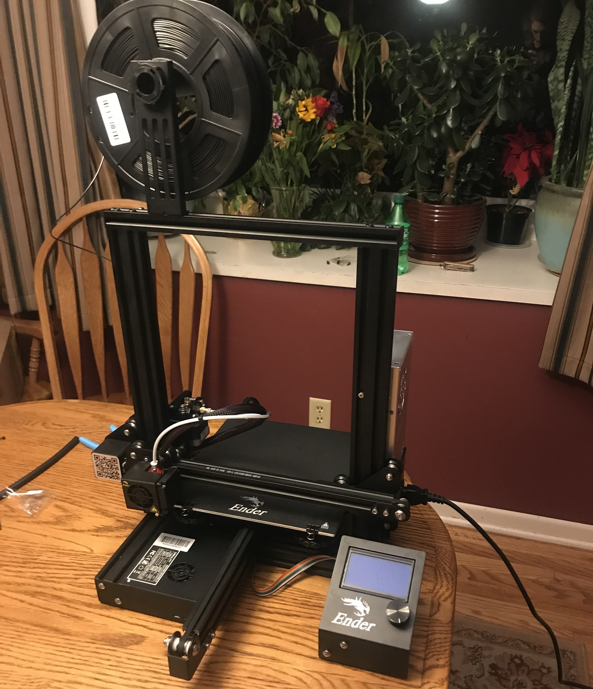
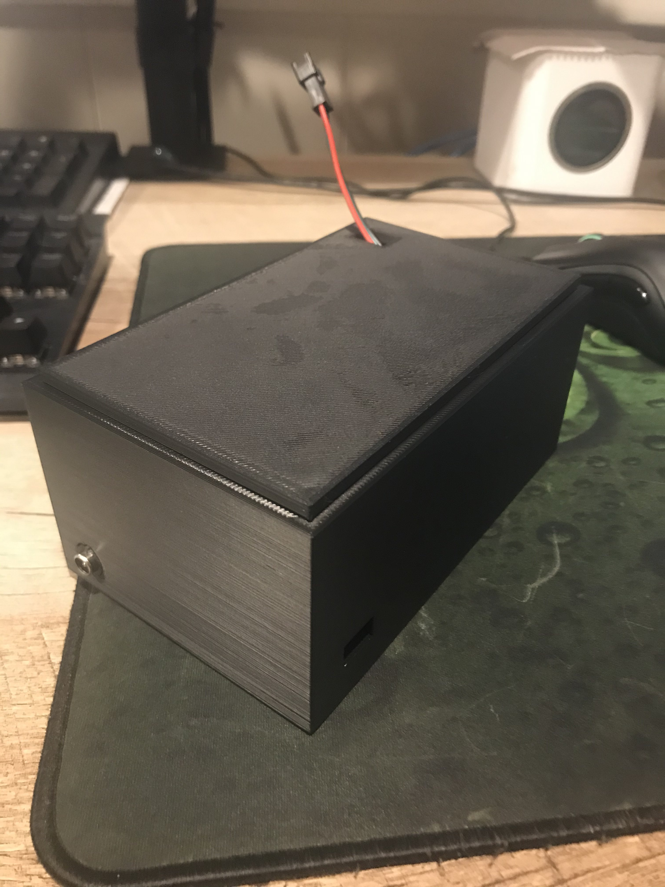

How I Got Started
When I was making my LED desk lighting, I wanted a nice little box to store the wiring in, and 3d printing seemed perfect for the job. At first I tried to use the two old makerbot printers my school had, but they had tons of issues.
Filament wouldn't feed, the beds were impossible to level for some reason (though that may have just been me being inexperienced at the time), and all sorts of other random issues. After about twenty failed attempts, I decided I needed one of my own.
Luckily, I had been doing my research for a little while, and came across the Ender 3—already cheap on its own—on sale already, plus a coupon code. I was able to get it under around 250$, extra filament and all.
 CAD
Don't sue me, but I use blender for most of my CAD.
I've used Autodesk products before: namely inventor, tinkercad, and fusion 360. Even though I'm comfortable in them,
and they're the "industry standard" I still prefer blender.
Blender, as a whole, is just so much nicer to work with. It's missing plenty of CAD features, but nothin' a few addons can't help! Really, though, I just prefer how blender handles 3d movement and 3d geometry. Plus, open source!
Did this while making one of the tubes for the squirrel project.